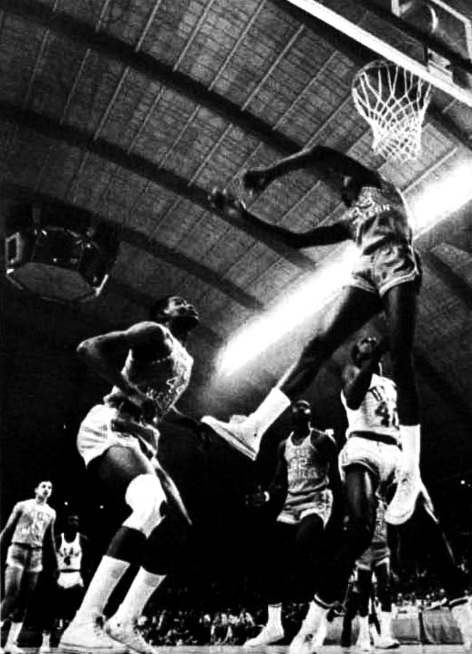

FICHA · SILUETA: RECREACIÓN
ENTRENADOR · TEXAS WESTERN

TEXAS WESTERN · 18·03·1966
N. SHED ANTE UTAH · DOMINIO PÚBLICO
TEXAS WESTERN · QUINTETO INICIAL
FOTO DE HILL: UTAH DAILY CHRONICLE, 1966 · DOMINIO PÚBLICO · RESTO: RECREACIÓN
Fotos: dominio público (anuario Flowsheet de UTEP, 1966; Utah Daily Chronicle, 1966; The Daily Tar Heel, 1967), vía Wikimedia Commons.
Fichas, pista, línea y marcador: recreación.